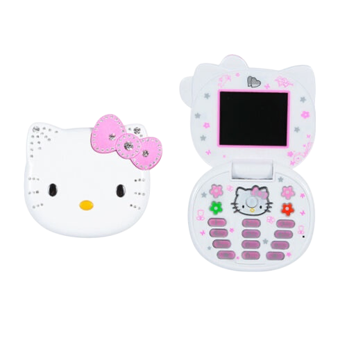
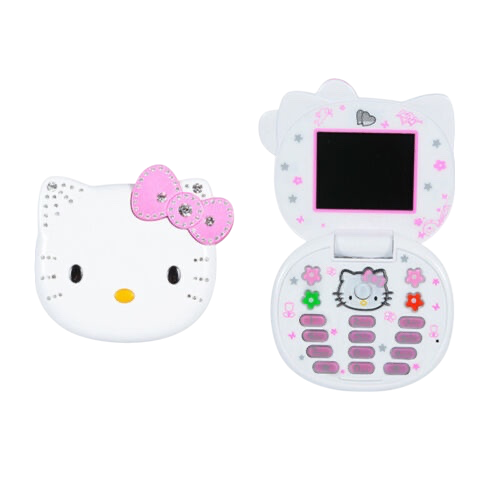
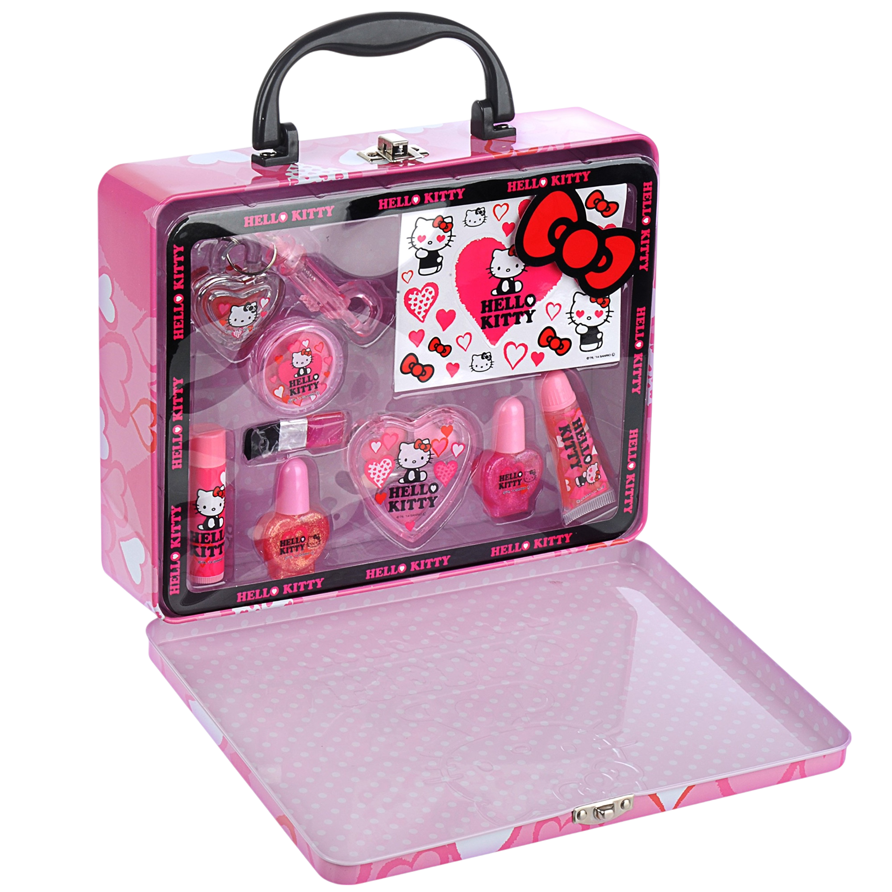
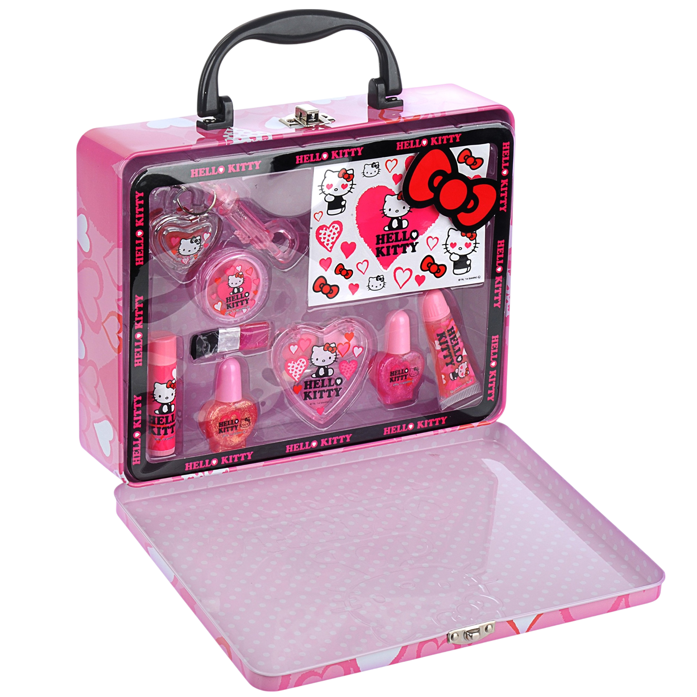

50 aniversario

 

Su simplicidad y dulzura atraviesan generaciones, creando un lazo afectivo que va más allá del consumo, convirtiéndola en un ícono cultural que acompaña a las personas a lo largo de sus vidas.


 
